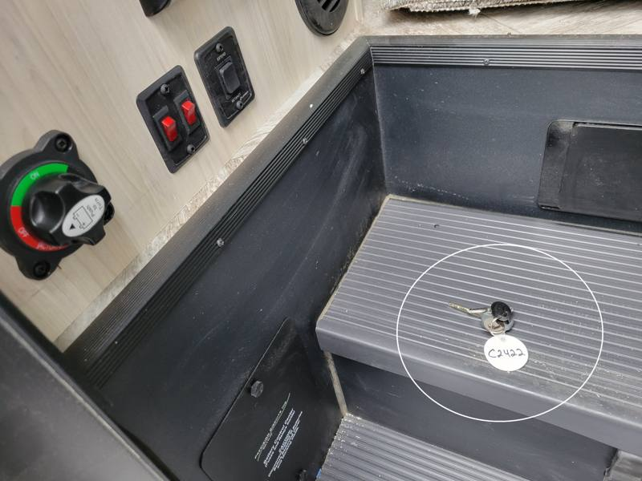
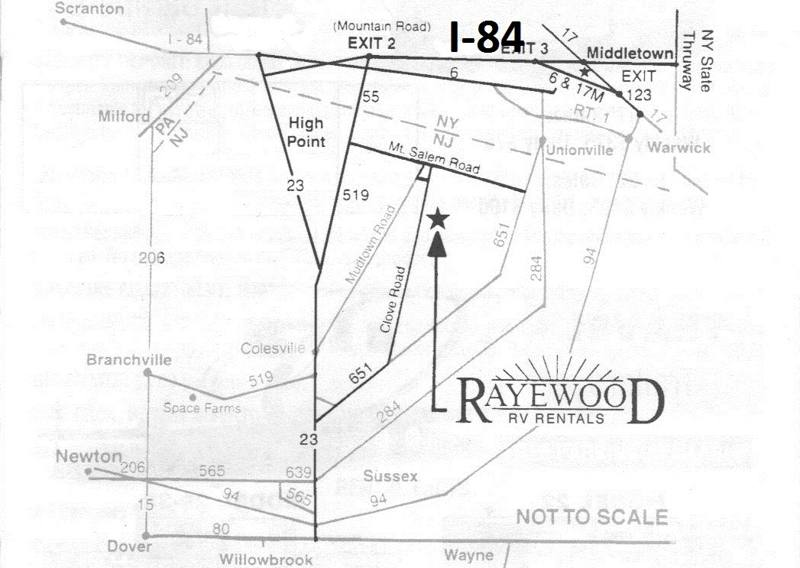
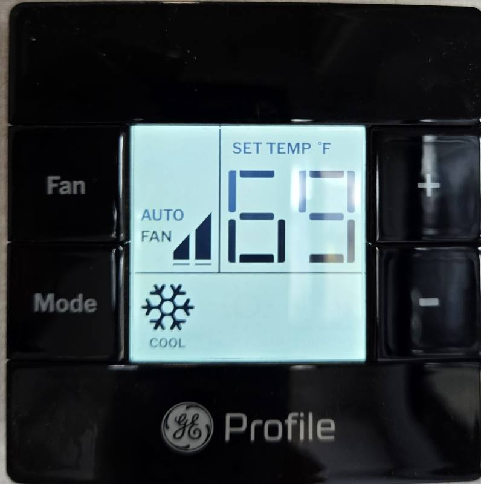
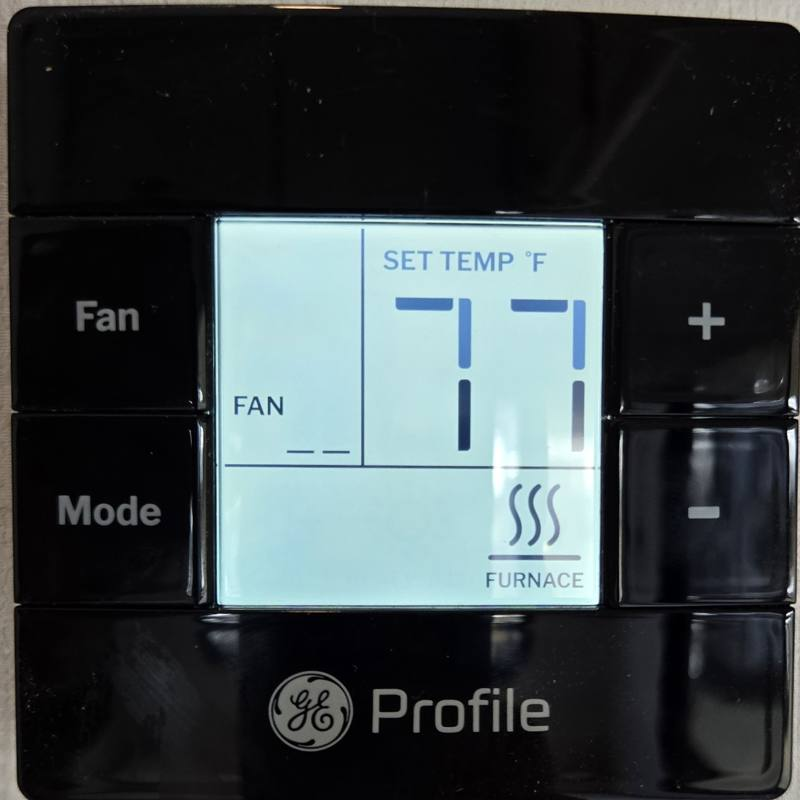
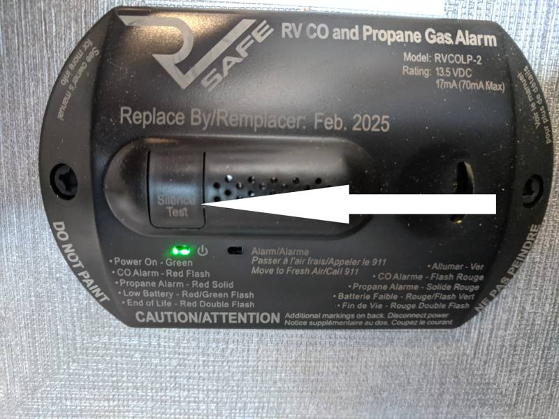
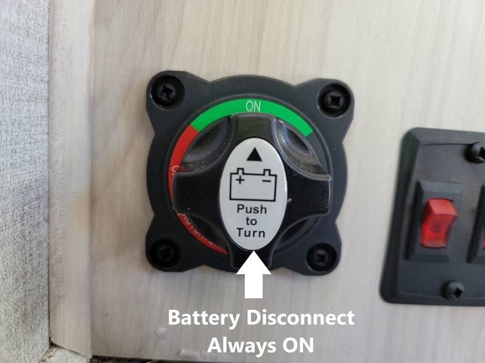
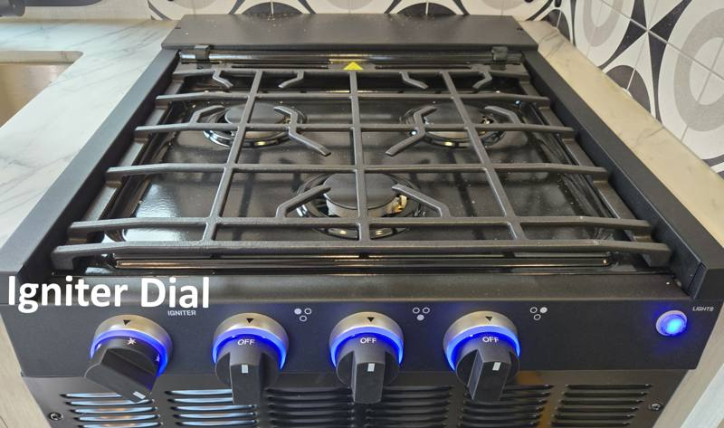
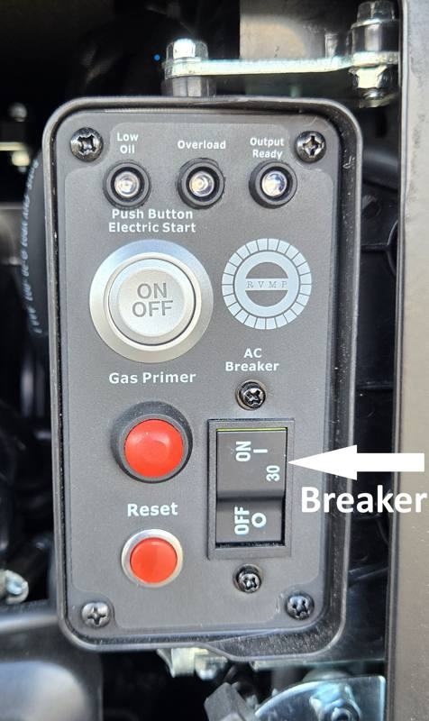
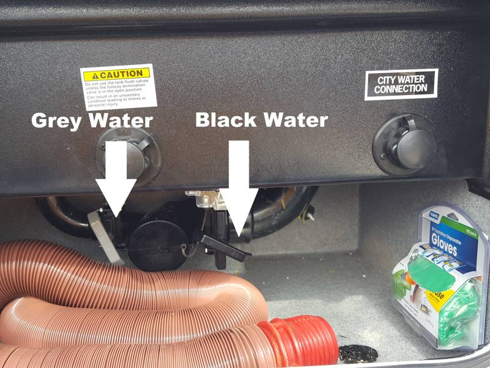
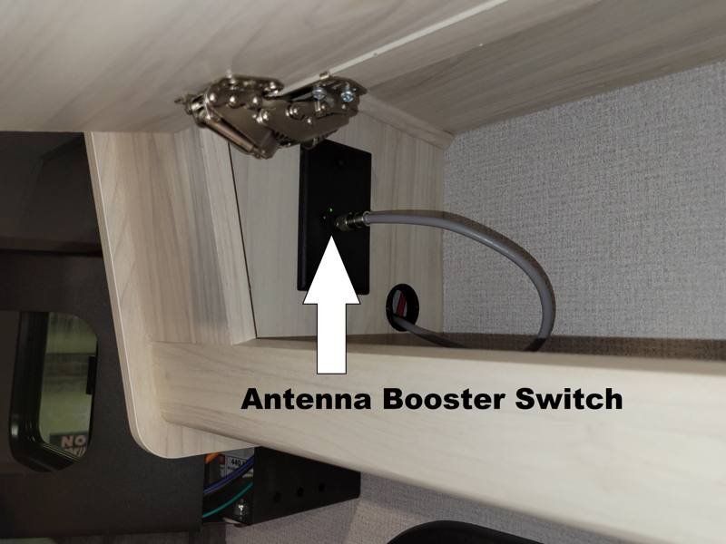

For Emergencies: please TEXT or Call (973) 826-0799 Peter will gladly answer your questions.
Flat Tire or Breakdowns
Chevy Roadside Assistance is available for the following items at No Charge:
Flat Tire Changes
Jump start for dead truck battery
Gas, if out of fuel
Vehicle Lock-Outs
Towing to the closest Chevy dealer
Chevy Roadside Assistance: 1 (800) 243-8872
24’ 6 Series Sunseeker
Driving
Width8½’
Height11½’
Please be cautious while turning, especially at gas stations and in traffic.
TIP
Swing W I D E !
Have someone watch the RV and security posts as you leave the gas station!
Have someone help you back up!
We DON’T want your security deposit. But…….
24’ 6 Series Sunseeker
Returning the Vehicle After Hours
Please nose the vehicle in, towards the front of our office building.
1
Lock the driver and passenger doors.
2
Exit by the entrance door of the camper.
3
Leave the Motorhome keys on the black rubber step of the RV.

DO NOT USE THE NIGHT DROP BOX!
DO NOT LOCK THE DEADBOLT!
Unless otherwise stated on our contract...
RETURN TIME IS 10AM
A late charge may be issued if not returned on time.
24’ 6 Series Sunseeker
General Directions
1
If heading North to NY State or West to PA, make a right out of our driveway.
2
If heading South through NJ, make a left out of our driveway.
3
When returning from via Route 84, use Exit 4.

24’ 6 Series Sunseeker
Thermostat Operation
To turn the unit ON or OFF, press MODE.
For Air Conditioning, press Mode until you see “Cool.” Then, press Fan until you are on “Auto.”
For Heat, press Mode until you see “Furnace.” Then, press Fan until it is OFF.
Set to desired temperature.

Air Conditioning Setting

Furnace Setting
FACT
The Heat Pump option is not sufficient to stay warm. Use the furnace.
TIP
When set to Cool, air comes from the top vents. When set to Furnace, air will blow from the bottom vents.
24’ 6 Series Sunseeker
A/C & Troubleshooting
FACT
Your A/C will not operate unless you are plugged into electric or have your generator running.
TIP
If your Microwave lights are ON, you are either plugged in to electric or have the Generator running, which means the A/C will operate.
Problem
Possible Cause
Possible Solution
Not Turning On
Bad 30 amp Outlet
Find new outlet or Run Generator
Not Turning On
A/C Breaker is tripped
Reset AC breaker in the breaker box
Not blowing cold air
Thermostat not set to “Auto”
See Thermostat Page
Furnace & Troubleshooting
Open Propane Tank.
Turn your Thermostat to Heat, Set Desired Temp.
Hot air will blow from lower vents only.
24’ 6 Series Sunseeker
Propane System
TIP
Be sure to turn your Propane tank on as soon as you get to your destination.
TIP
Tank is found outside the RV in the Compartment labeled “Propane”. To Turn Propane Tank ON, Turn the round knob counterclockwise.
USES
You will need the Propane ON for: Hot Water, Heat, Cooking Range.
TIP
Turn your Propane on BEFORE attempting to turn on any appliances.
TIP
When time to travel again, turn those appliances off, THEN go outside to turn the propane tank off.
24’ 6 Series Sunseeker
Hot Water Heater
1
Turn propane tank on outside.
2
Go to the Control panel & flip “GAS” Hot water heater switch to “ON” position.
FACT
The Red Fault light will immediately go on for about 15 Seconds through the ignition process. Once the heater is properly lit, the Fault light will go off. The red switch will always stay lit.
IF
If the Small LED “Fault” light STAYS ON, turn the water heater switch OFF; CONFIRM the propane tank is ON; retry the GAS switch.
TIP
You are equipped with a 6 gallon Hot Water Heater. It can take 30 minutes to get 6 gallons of water hot. Be patient.
24’ 6 Series Sunseeker
Carbon Monoxide Detector
Located left of the Dinette, near the floor
CO detectors are designed to alarm if there are dangerous levels of CO, giving people adequate warning to safely ventilate the area or evacuate.
Problem
Possible Cause
Possible Solution
Detector Sounds
House Batteries are LOW!
Start Generator to charge batteries
Detector Sounds
Neighbor’s Generator Exhaust Entering your RV
Move vehicle
TIP
If you are down wind or parked too close to another vehicle running its generator, the fumes may cause your CO Detector to sound. Move your vehicle so it is properly ventilated.
To mute the alarm: Press the “Test/Mute” Button.

24’ 6 Series Sunseeker
Propane “LP” Detector
Located left of the Dinette, near the floor
Liquid Propane “LP” powers multiple items in the vehicle. Please read the following if you or someone smells gas in the vehicle, or if the detector sounds.
IF YOU SMELL GAS
Extinguish all flames.
Do not touch electrical switches.
Shut off the Gas at the tank supply (outside the vehicle).
Open doors and other ventilating openings.
Leave the vehicle until odor clears.
Have system checked and leakage source corrected before using again.
TIP
To mute the alarm: Press the “Test/Mute” Button.
24’ 6 Series Sunseeker
Electrical Power
TIP
It is strongly recommended to have the RV plugged into shoreline power as often as possible. This provides consistent power and charges the batteries.
30A
The vehicle is equipped for 30 amps; a 15 amp adaptor is provided in case 30 amp power is not available.
Spare Fuses
Many features of the RV are fuse driven. If a feature is not functioning, simply replacing the fuse may be a quick fix. Most fuse boxes are found at the floor level of the queen bed; they are labeled for quick reference.
TIP
Many troubleshooting tips should be tried before pulling fuses. Spare fuses can be found in the back of this book.
Electrical Troubleshooting
No electrical power
Outside connection / main breaker
Confirm receptacle power / reset breaker
No power at outlets
Tripped GFI button
Find outlet with button & reset
24’ 6 Series Sunseeker
Battery
The vehicle is equipped with an auxiliary battery for the camper. Battery is mostly used when not connected to outside electricity.
TIP
The Battery disconnect dial is near the entrance step of the vehicle; please make sure it is in the “ON” position. It should NEVER be touched.
TIP
The Propane/CO Leak Detector will “chirp” or sound if your auxiliary battery is too low or about to die. Run your generator or plug into shore power to charge the battery.

Battery Troubleshooting
Low or Dead Battery
Something left on…
Plug in outside electricity or charge battery (RUN GEN). If problem remains, Start truck, run for 3 minutes, then start generator, shut truck off.
24’ 6 Series Sunseeker
Stove Top “Range” Operation
Make sure the Propane Tank is ON
1
Power the Stove top ON using the Blue Button on Right.
2
Turn the Center Burner ON and PUSH. Keep Pushing.
3
Twist the Igniter Dial Right on the left to light the burner.
IF
If the Igniter Dial does not work, use a Stick Lighter to light the burner manually. Make sure the Propane tank is ON.

24’ 6 Series Sunseeker
Generator Operation
When NOT plugged directly into electricity, you will need the generator for:
110 Volt outlets on the wall
Roof top air conditioner
Microwave
FACT
The Generator will charge the RV house batteries if they are running low.
FACT
The Generator will stop running when there is a ¼ tank of fuel left in the truck.
TIP
You can use the generator while in motion.
FACT
When you are plugged in at a Campsite, you will not need the Generator.
24’ 6 Series Sunseeker
Generator Troubleshooting
Generator won’t start
Camper battery low
Start truck engine, start generator, turn off truck
Generator won’t start
Motorhome gas tank below ¼ tank
Fill the motorhome gas tank
Generator Breaker
If the Generator is running but not putting out power (check for microwave lights) the Breaker on the Generator may be tripped.
1
Go outside to the generator storage trunk, usually behind driver’s door.
2
Open the Trunk Door with your Grey “Global Link” key.
3
Remove the Black Generator Door.
4
Find the breaker, located to the RIGHT side.
5
Push “ON” so the breaker button sits flush.
6
YOU MUST properly secure the Black Door back onto the Generator.

24’ 6 Series Sunseeker
Refrigerator Operation
FACT
The refrigerator operates off the battery and being plugged into 110 volts AC ensures a strong battery.
FACT
Depending on temperature, it may take 3-4 hours to get the refrigerator cold from a “warm” state. Please be patient.
TIP
It can take twice as long to cool a refrigerator when packed with food; leave your food in your cooler until the refrigerator is cold.
Please make sure the Fridge & Freezer Door is latched secure so that the doors don’t open while in transit.
Fresh Water
Filling the Water Tank: The Water tank Fill port is found on the Entrance door Side, to the left of the Water heater. Fill it until water comes out the overflow. To use the Tank, you will need the water pump ON.
24’ 6 Series Sunseeker
Fresh Water
This water can be used while in transit. Once at a campsite, plan to connect to the City Water if the site offers it.
City Water Connection
Found on the Off door side, in the compartment near the waste valves. Each vehicle includes a fresh water hose. Make the connection from the outside spigot to the “City Water Connection”.
NOTE
DO NOT STORE THE FRESH WATER HOSE with the Sewer Hose. Contamination can occur and you may be responsible for replacing the fresh water hose.
Water Pump
FACT
Water Pump is not needed when connected to city water.
TIP
Travel with the Water Pump off, turn on as needed when using water on the road.
24’ 6 Series Sunseeker
Sewer Tanks & Dumping Operation
Black WaterWaste
Grey WaterShower & Dish Water
In most vehicles, each tank is 39 Gallons.
TIP
Plan on dumping your Black water tanks every 2-3 days or as needed.
TIP
When traveling, both valves should be closed. At the campsite, only one valve should be open at a time, and it will usually be the gray valve.
FACT
The only items flushed down the toilet are waste and single ply paper. Anything else will cause a clog and may result in additional charges.
DUMP
Ideally, dump when the black tank is at least ½ or more full. Empty the Black Water tank FIRST, then Grey Water.

24’ 6 Series Sunseeker
Sewer Tanks & Dumping Operation
TIP
Before each use, AND after each tank dumping, fill the toilet with water and flush. More water will help break up solids and prevent clogging.
Monitor reads full when empty
Debris build-up on tank sensor
Monitor level by holding down toilet foot lever & visually determining
Unpleasant odor
Tank full / needs chemical / trap blocked
Empty tank, add chemical, or carefully clear trap seat
DO NOT
DO NOT PUT COFFEE GRINDS OR ANY FOOD DOWN THE SINK DRAINS, LIQUID ONLY.
Monitor Panel
If Black & Grey tanks read 2/3 full when empty, monitor level by holding down toilet foot lever & visually determining. If the LP gauge is not working, use the secondary gauge mounted on the propane tank.
FACT
The monitor panel is for your convenience. There are alternate ways to check most levels should the monitor panel malfunction. Please call if you have questions.
24’ 6 Series Sunseeker
TV Operation
Connecting your Device
1
Connect your device, such as a laptop, to the left side of TV with an HDMI cable.
2
Push the top right button on the remote.
3
HDMI 3 will be available as an option. Click This!
Cable TV
LOC
Cable connection found outside at the drivers side rear, next to the 30 amp power cord plug.
24’ 6 Series Sunseeker
Cable TV Operation
The Renter must provide their own coax cable when connecting to cable TV.
FACT
When connecting the RV directly to Cable, the antenna booster switch & red light must be “OFF”.

We do not guarantee TV antenna reception and advise that one SHOULD NOT plan on getting reception. It is dependent on where you specifically are located.
Scan Channels
Using the Remote: Click Home
Scroll over & click Settings
Click the Gear for additional settings
Click “General”
Click “Channels”
Click Channel Tuning
Scan available Channels using Auto Tuning
Awning Operation
NOTICE
ANY awning damage will be charged at full cost with no deductible waiver. USE AT OWN RISK.
Required: Make sure the Engine is off and Parking Brake is ON to use the awning.
24’ 6 Series Sunseeker
Awning Operation
TIP
Awnings must never be left out overnight or when you are NOT with the vehicle. Wind gusts or rain accumulation will easily damage the awning.
Awning will not roll out or in
Ignition on / parking brake not ON
Remove keys from ignition, set parking brake
Awning will not roll out or in
Blown Fuse
Find replacement fuse in back of book; call for assistance
Awning will not roll out or in
Motor failure
Find Allan Wrench in back of book; call for assistance